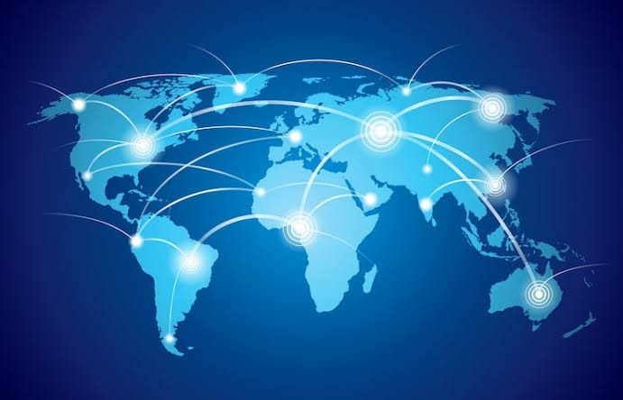
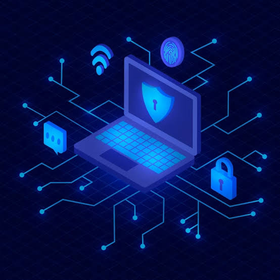

Marc Rivero
Marc Rivero es presentado como investigador de ciberseguridad, especializado en análisis de malware, inteligencia de amenazas y análisis de inteligencia.
Una conversación sobre ciberespionaje, ciberguerra, inteligencia artificial, privacidad y los riesgos tecnológicos del futuro.
La conversación comienza planteando una idea cada vez más importante: una guerra moderna no necesariamente tiene que comenzar con tanques, aviones o soldados. Internet también puede convertirse en un espacio de conflicto entre países, organizaciones y grupos especializados.
Durante el episodio se habla sobre el ciberespionaje, los ataques informáticos y la posibilidad de que información sensible sea obtenida desde teléfonos, computadoras y otras tecnologías.
Marc Rivero es presentado como investigador de ciberseguridad, especializado en análisis de malware, inteligencia de amenazas y análisis de inteligencia.
Se conversa sobre Pegasus y sobre los ataques dirigidos contra teléfonos de figuras políticas españolas. También se explica que atribuir técnicamente un ataque a un país determinado es una tarea compleja que requiere evidencias.

Una de las ideas principales del episodio es que los conflictos actuales pueden desarrollarse también mediante ataques informáticos, espionaje, desinformación y otras formas de presión.
En la conversación se utiliza el concepto de guerra híbrida para describir situaciones en las que diferentes herramientas pueden combinarse para generar presión sobre un país sin recurrir directamente a una guerra convencional.
Se explican diferentes tipos de malware. Algunos buscan obtener dinero mediante el secuestro de información, mientras que otros pueden tener como objetivo destruir o inutilizar datos y sistemas.
Una de las principales preocupaciones mencionadas es la posibilidad de ataques contra sistemas importantes como hospitales, redes eléctricas, servicios de agua y otras infraestructuras necesarias para la sociedad.
También se habla de una denominada zona gris, situada entre las operaciones de inteligencia, el espionaje, la desinformación, el sabotaje y un conflicto militar abierto.
El episodio utiliza diferentes ejemplos geopolíticos para explicar cómo los ataques digitales pueden formar parte de conflictos internacionales.
El programa diferencia entre hackers que trabajan de forma ética y aquellos que utilizan sus conocimientos con fines ilegales. También se explica que existen grupos patrocinados por gobiernos que desarrollan capacidades avanzadas de ciberseguridad y espionaje.
Los hackers de sombrero blanco utilizan sus conocimientos para encontrar vulnerabilidades y mejorar la seguridad de sistemas y organizaciones.
Los hackers de sombrero negro utilizan sus conocimientos con fines ilegales, como obtener información, dinero o acceso no autorizado a sistemas.
Se explica que algunos ataques pueden necesitar que la víctima interactúe con un mensaje o enlace, mientras que otros pueden aprovechar vulnerabilidades que permiten comprometer un dispositivo sin una acción visible por parte del usuario.
Los ataques más sofisticados pueden ser extremadamente costosos y suelen estar relacionados con objetivos de alto interés para grupos especializados.
Una de las discusiones centrales del episodio es la relación entre privacidad y seguridad. Los participantes plantean la pregunta de cuánto estamos dispuestos a sacrificar de nuestra privacidad para conseguir una sociedad más segura.
Se habla de cámaras, teléfonos, vigilancia, datos personales y sistemas de reconocimiento. La conversación también recuerda que una mayor vigilancia no significa necesariamente que todos los problemas de seguridad puedan evitarse.
La seguridad busca proteger a las personas, organizaciones, sistemas e infraestructuras frente a diferentes amenazas.
La privacidad busca proteger la información personal y limitar quién puede acceder a nuestros datos y actividades.
El episodio plantea que ambas pueden ser necesarias y que el reto consiste en encontrar un equilibrio entre ellas.
Las redes WiFi públicas son otro de los temas tratados. Aeropuertos, hoteles, cafeterías y otros lugares ofrecen conexiones que pueden resultar convenientes, pero también requieren precaución.
Una red pública puede presentar riesgos si no se sabe quién la administra o cómo está configurada. Por eso se recomienda tener cuidado antes de introducir información sensible.
Durante el episodio se menciona el uso de una VPN como una herramienta que puede ayudar a proteger la comunicación cuando se utiliza una red que no es de confianza.
También se recomienda separar diferentes dispositivos dentro de una red doméstica. Por ejemplo, cámaras, dispositivos inteligentes y otros aparatos conectados pueden mantenerse separados de los equipos donde se almacena información personal.
Las amenazas no siempre dependen de vulnerabilidades técnicas. Muchas estafas utilizan ingeniería social para convencer a una persona de realizar una acción que puede poner en riesgo su información.
Se mencionan las estafas románticas, los mensajes engañosos y los códigos QR manipulados como ejemplos de situaciones en las que el usuario debe desconfiar de solicitudes inesperadas.
La conversación también aborda la Dark Web. Se explica que no todo su contenido tiene necesariamente una finalidad criminal, aunque también existen espacios utilizados para actividades ilegales.
Se menciona el caso histórico de Silk Road y se explica que el anonimato en Internet no significa necesariamente que una persona sea imposible de rastrear.
Otro tema importante es el mercado de vulnerabilidades. Empresas tecnológicas organizan programas y concursos en los que investigadores buscan fallos de seguridad para ayudar a corregirlos.
Estos programas permiten que los investigadores trabajen de manera legal y contribuyan a mejorar la seguridad de productos y servicios.

La inteligencia artificial ocupa una parte importante de la conversación. Se plantea que esta tecnología puede tener aplicaciones positivas, pero también puede aumentar las capacidades de quienes quieran utilizarla con fines dañinos.
Uno de los temores mencionados es que herramientas cada vez más avanzadas puedan facilitar determinadas actividades de ciberataque incluso para personas con menos experiencia.
La IA puede facilitar la creación de contenido falso, automatizar determinadas tareas y aumentar la velocidad con la que se desarrollan nuevas amenazas.
Al mismo tiempo, la inteligencia artificial puede ayudar en investigación científica, medicina, biotecnología y análisis de grandes cantidades de información.
Hacia el final de la conversación aparece una visión más optimista sobre el futuro. Aunque existen riesgos relacionados con la tecnología, también existen oportunidades para mejorar la vida de las personas.
Se habla de robots capaces de ayudar a personas mayores o con dificultades de movilidad, sistemas de inteligencia artificial utilizados en medicina y nuevas tecnologías que podrían apoyar la investigación de enfermedades.
La inteligencia artificial puede utilizarse como una herramienta de apoyo para analizar información médica y colaborar con profesionales. El episodio presenta diferentes ejemplos para ilustrar este posible futuro.
También se plantea una preocupación más cotidiana: nuestra dependencia de los teléfonos y otros dispositivos. Por ejemplo, si una persona pierde su teléfono podría incluso tener problemas para recordar números importantes.
Como recomendación práctica, se propone conservar en papel una lista con algunos números de teléfono importantes para situaciones de emergencia.
La conversación muestra que la ciberseguridad no solamente consiste en proteger computadoras. También está relacionada con la política, la economía, la privacidad, las relaciones internacionales y la vida cotidiana.
A medida que la sociedad depende más de Internet, los teléfonos, la inteligencia artificial y otros dispositivos conectados, comprender sus riesgos se vuelve cada vez más importante.
El episodio termina con una visión relativamente optimista: la tecnología puede presentar riesgos importantes, pero también puede convertirse en una herramienta para mejorar la vida humana cuando se utiliza de manera responsable.
Puedes ver aquí el episodio completo: